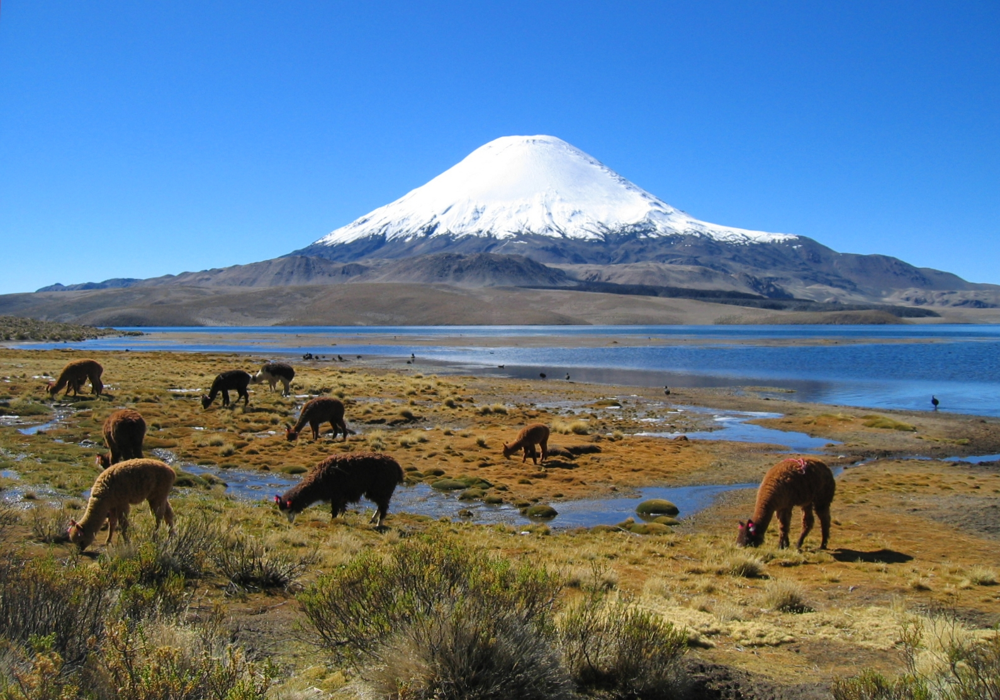
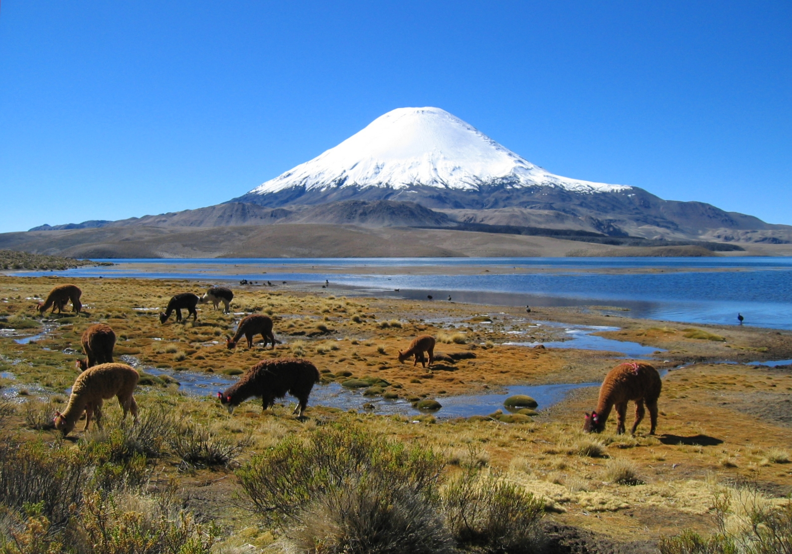

My name is Trevor Newcomb, and I'm from California. I've lived all over the Bay Area: Willow Glen, San Jose, Morgan Hill, Los Gatos, Palo Alto, and now Mountain View.
My passions are travel and astronomy, I want to visit every continent and experience new cultures. On the way I'd love to see everything the sky has offer, from eclipses to the aurora borealis. My travels have taken me to Chile, New Zealand, and South Korea, and they all were amazing experiences to have.

 

When I finished high school I went to De Anza University for two years to get my pre-rerequisites out of the way before moving on to a four year institution, but I was unfortunatly thwarted by the education budget cuts. So, after finishing De Anza I went traveling. After coming home I decided to enroll in DBC to continue my education at a faster pace and get myself into a rewarding career.
I have a few quirks: I'm a bit of a perfectionist (some might call it a bit OCD). I cannot eat ice cream without having a glass of milk with it. I also love soccer, which, living in America, some would call a quirk.